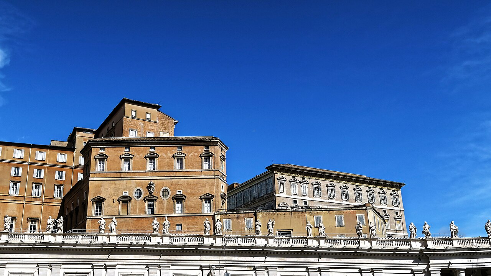
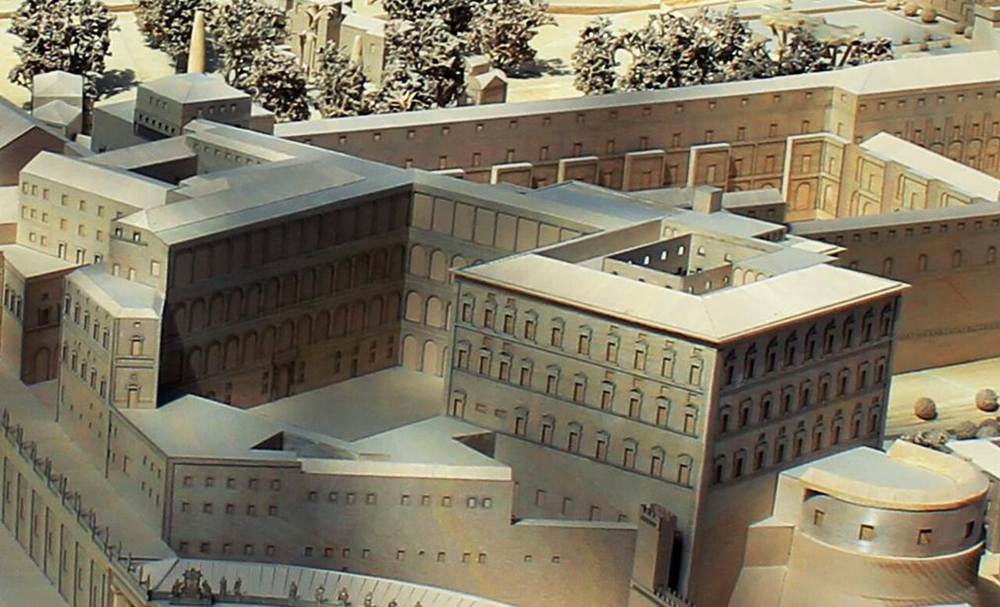
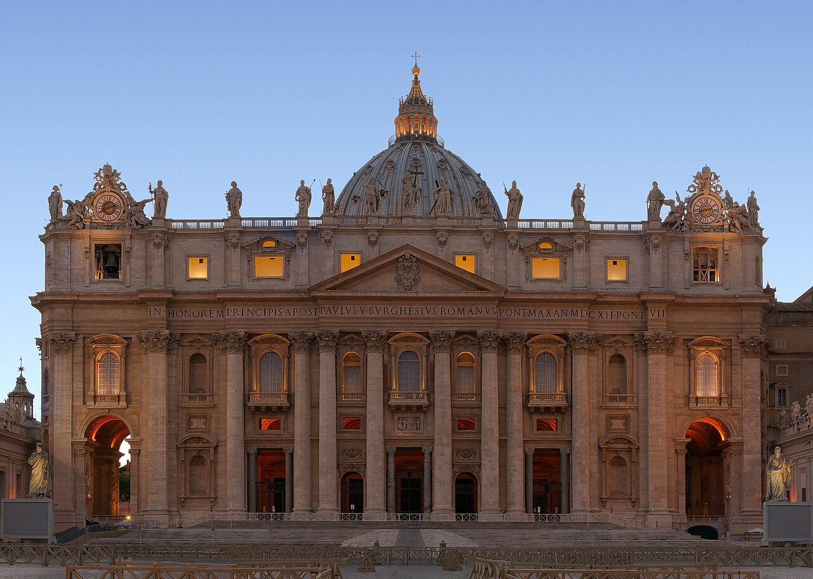
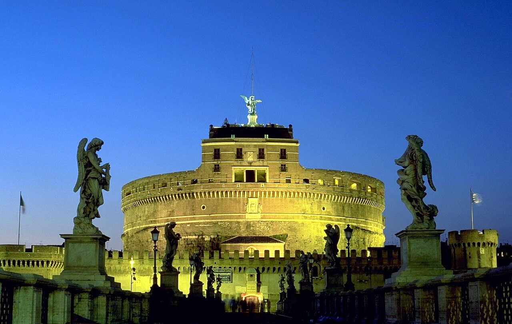
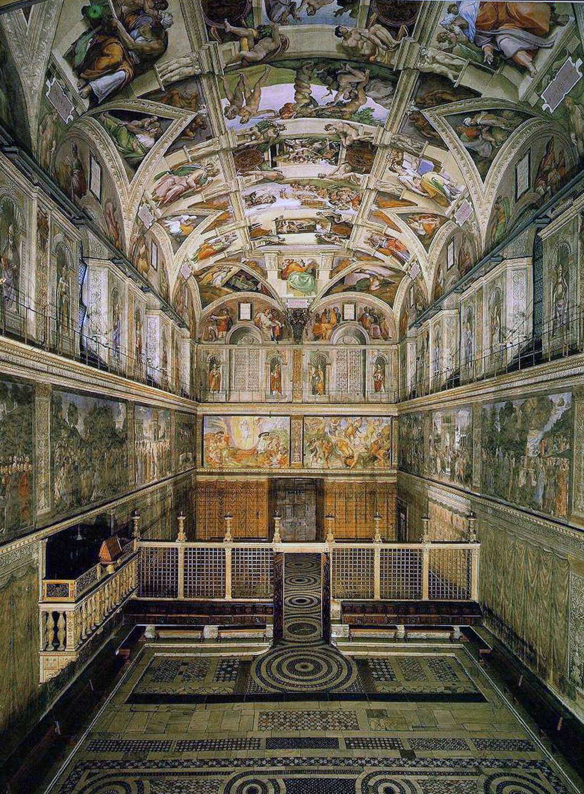
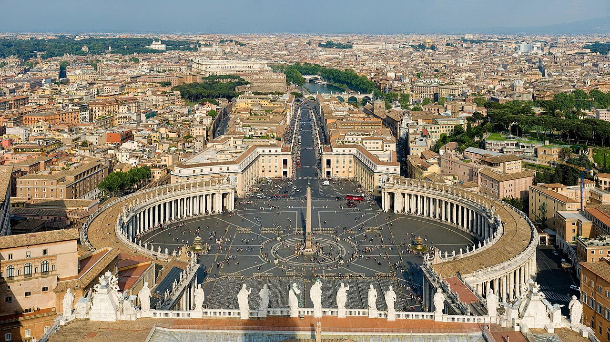
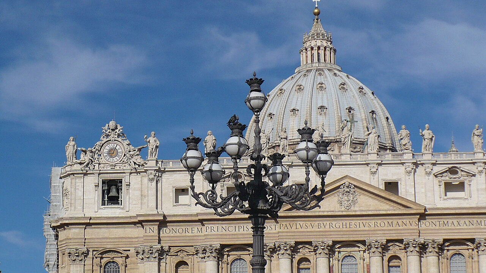
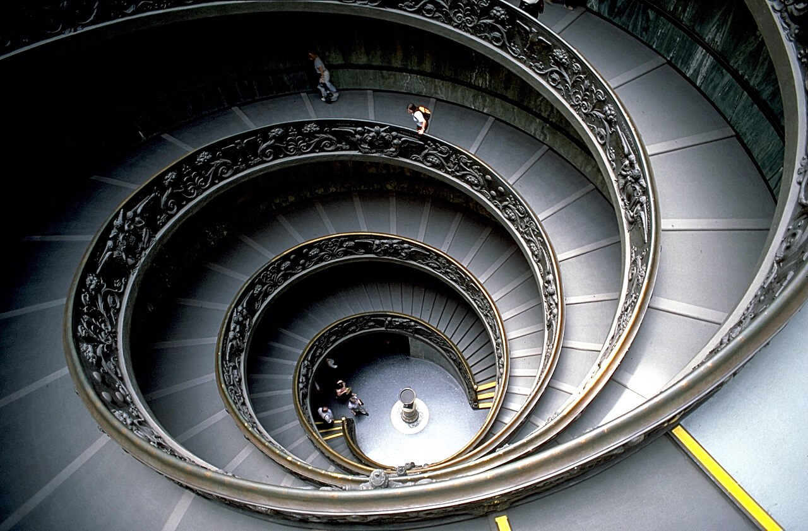

Исторические и справочные гербы


Vatican City
Путеводитель. Объектов в этом выпуске: 18.
OTIUM — практика нарочитого досуга. В античном смысле otium — не побег от работы, а время, когда внимание возвращается к памяти, пейзажу и мысли — без прикладного дедлайна.
Мы выстраиваем маршруты для неспешного присутствия, а не для чек-листа достопримечательностей: важно быть в месте, а не «потреблять» виды.
OTIUM — не туроператор. Это приглашение пройтись, остановиться и оставить маршрут незавершённым, если свет на фасаде заслуживает ещё минуты.
Исторические и справочные гербы
Путеводитель. Объектов в этом выпуске: 18.
Ватикан — карликовое государство-анклав внутри Рима, резиденция папы и центр Римско-католической церкви.
Микро-государство на холме Ватикан со Собором Святого Петра, музеями и библиотекой; суверенитет оформлен Латеранскими соглашениями 1929 года. Культурное наследие Ренессанса и современная дипломатия сосредоточены на площади святого Петра.
Вторая мировая война и поздний XX век закрепили нейтралитет; папство Иоанна Павла II и последующих понтификов усилили дипломатическую роль. Ватикан остаётся центром канонического права, искусства и межрелигиозного диалога на микротерритории внутри Рима.
Palazzo Apostolico

Principal residence and offices of the Pope, including chapels and rooms used for audiences and administration within Vatican City.
Nicholas V and later popes expanded an older nucleus near St Peter's into the palace complex familiar from aerial views.
The administrative and ceremonial heart of the Holy See's Vatican City territory.
Apostolic Palace model.jpg

Basilica Sancti Petri blue hour.jpg

Mausoleo di Adriano

Hadrian's mausoleum later converted into a papal fortress and prison, linked to the Vatican by the elevated Passetto di Borgo.
Antiquity through the Renaissance layered military and residential functions onto Hadrian's original drum.
A landmark on the approach to St Peter's and a reminder of papal security in early modern Rome.

Ignazio Danti's regional fresco maps of Italian territories under a vaulted ceiling.
Gregory XIII commissioned cartographic propaganda linking papal states to church history.
Art-historical atlas in architectural form.
Ponte Sant'Angelo

Pedestrian bridge lined with angels carrying instruments of the Passion, leading toward the castle and the Vatican beyond.
Ancient fabric retained while Counter-Reformation Rome re-dressed the bridge as a devotional approach.
A ceremonial threshold between the river city and papal fortifications.

Philosophers gather in imagined classical architecture—Raphael's fresco anchors the Stanza della Segnatura.
Julius II's apartment decoration programme rivalled the Sistine ceiling upstairs.
Western canon image of philosophy as embodied community.
Cappella Sistina

Papal chapel famous for Michelangelo's ceiling frescoes and the Last Judgment on the altar wall; also the site of papal conclaves.
Built for Pope Sixtus IV; successive campaigns of fresco painting culminated in Michelangelo's monumental ceiling and later altar wall.
A touchstone of Western art and a working liturgical space.
Basilica di San Pietro

Papal major basilica and principal church of the Catholic Church, built over the traditional site of St Peter's tomb. Its dome dominates the Vatican and Roman skyline from many viewpoints.
Constantinian basilica preceded the present building; the 16th–17th-century reconstruction created the vast Latin-cross plan visitors see today.
A major pilgrimage destination and a reference point of Renaissance and Baroque architecture.

Helicopter-era aerial showing ellipse, basilica dome, and Vatican Gardens green wedge.
20th-century photography made the micro-state legible at cartographic scale.
Urban design read of Bernini's arms-open colonnade.
Piazza San Pietro

Grand piazza defined by Bernini's colonnades, opening toward the Tiber and linking the basilica to the city beyond the river.
Maderno and Bernini shaped the space in relation to the new basilica façade; the oval became the setting for papal audiences and major liturgies.
One of the world's most recognisable public spaces in front of a major shrine.
St. Peter's Cathedral, Vatican - panoramio.jpg

Sura 33.jpg


Striped Renaissance-style uniforms at Vatican entrances balancing ceremony with security.
Julius II's Swiss mercenary contract evolved into today's small professional corps.
Living colour accent at world's smallest state's gates.
Vatican City (VA), Petersdom -- 2013 -- 3902.jpg

Giardini Vaticani

Private gardens and wooded areas covering much of Vatican City's territory, with fountains, orchards, and views toward the dome.
Medieval vineyards and orchards evolved into Renaissance garden compartments patronised by successive pontificates.
Green space and quiet within one of the world's smallest states.
Musei Vaticani

Museum network displaying papal art collections, classical sculpture, and the decorated chapels that draw millions of visitors each year.
Papal patronage accumulated antiquities and old masters; public access developed from the 18th century into the modern museum itinerary.
A core destination for art history alongside Christian pilgrimage.
VaticanMuseumStaircase.jpg
